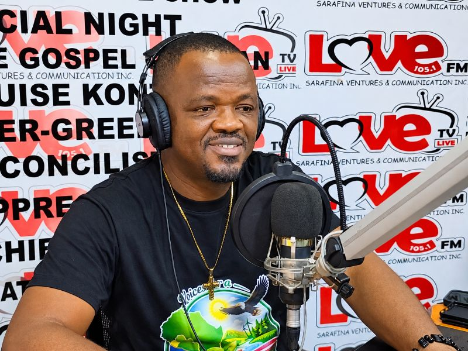

Plastic pollutionVGL Media · Facebook Video
Rethinking single-use plastic bags
An awareness message encouraging reusable bags and responsible waste disposal.
Watch on Facebook ↗VGL Media's output to date: discussion on air, awareness campaigns on social media, and community action recorded as it happened. Written articles are not published here yet — when they are, they will appear on this page.
The Environmental Hour brings experts, institutions, community leaders and the public into the same conversation.

A discussion framed around waste responsibility and flooding in Monrovia — the clearest example of how the programme connects a daily nuisance to a city-wide problem.
Digital communication built around one decision a viewer can actually make.
An awareness message encouraging reusable bags and responsible waste disposal.
Watch on Facebook ↗A message addressing street pollution from household and business waste.
Watch on Facebook ↗Videos open on Facebook. Playback depends on Facebook availability and may require you to log in.
Documentation is the fourth step of our community model, and the reason the work can be held to account.

Volunteers, young people and residents cleared mud, silt and litter from a market street and its drainage after flooding. Nine photographs from VGL clean-up activities are published in full.
Our work in picturesOur newest videos, drawn live from the VGL Media channel rather than listed by hand.
Environmental journalism is the first of our six areas of work, and written stories are not yet published on this page. If you know of an environmental issue that deserves reporting, the fastest way to put it in front of us is to send it.
Share a story ideaEvery discussion we broadcast started with somebody raising it.